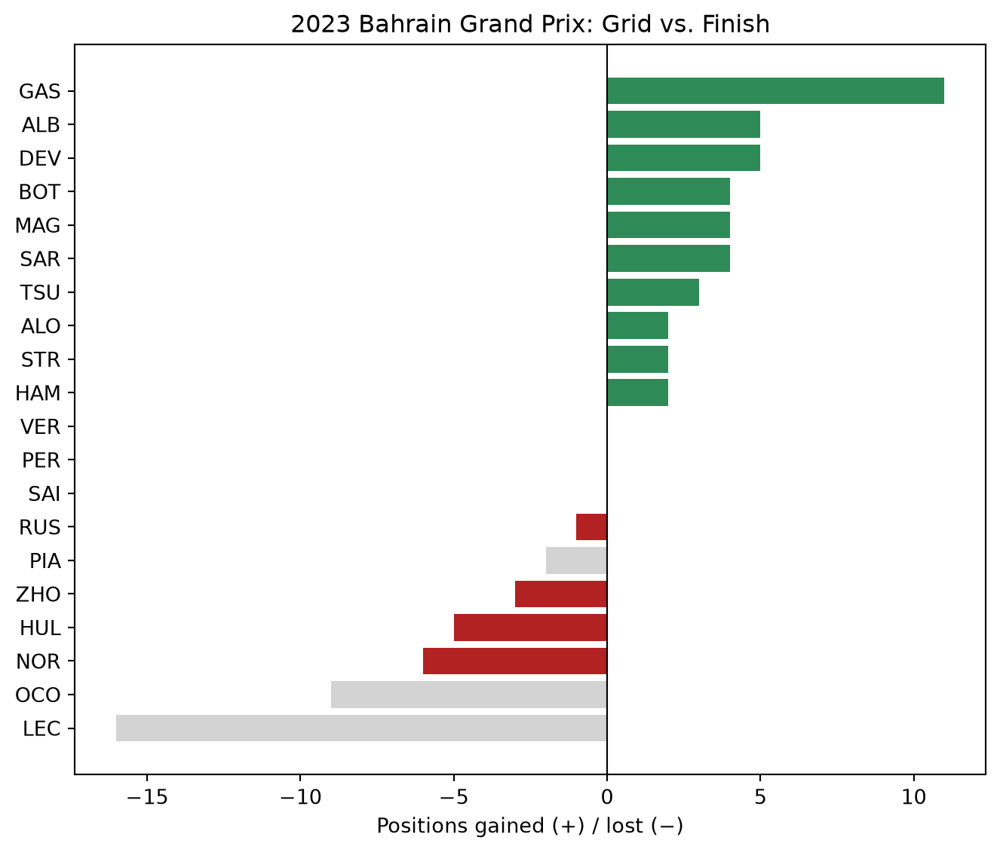

Who Gained the Most Places? Comparing F1 Grid and Finish Positions with pandas
pandas
visualization
Formula 1
Merge race data, calculate positions gained or lost, and chart the results.
Author
Isaiah Cabrinha
Published
October 13, 2026
Introduction
In Formula 1, where a driver starts doesn’t decide where they finish. Qualifying sets the starting grid, but over a race strategy, overtakes, crashes, and penalties shuffle the order. One simple way to measure who had a great (or terrible) race day is to compare each driver’s starting grid position with their finishing position.
This is also a great example of a very common data-science task: comparing two columns to create a new one. By the end of this tutorial you will be able to:
load and merge data that is split across several CSV files,
create a new column that measures positions gained or lost,
sort and interpret the results, and
make a bar chart that shows who moved forward and who fell back.
The data
I’m using the Formula 1 World Championship dataset on Kaggle, which is built from the Ergast motor racing database. Like a real database, the data is split across many CSV files that are linked by ID columns. We only need three of them:
File
Key columns we use
What it tells us
results.csv
raceId, driverId, grid, position, positionOrder
Where each driver started and finished in each race
drivers.csv
driverId, code, surname
Who each driverId is
races.csv
raceId, year, name
Which race each raceId is
results.csv doesn’t contain driver names or race names, only ID numbers. That’s why we need to merge it with the other two files.
Step 1: Load the files
import pandas as pdimport matplotlib.pyplot as pltresults = pd.read_csv("results.csv", na_values="\\N")drivers = pd.read_csv("drivers.csv", na_values="\\N")races = pd.read_csv("races.csv", na_values="\\N")results[["raceId", "driverId", "grid", "position", "positionOrder"]].head()
raceId
driverId
grid
position
positionOrder
0
18
1
1
1.0
1
1
18
2
5
2.0
2
2
18
3
7
3.0
3
3
18
4
11
4.0
4
4
18
5
3
5.0
5
Note: this dataset marks missing values with \N instead of leaving the cell blank. Passing na_values="\\N" tells pandas to treat those as real missing values (NaN). Without it, numeric columns like position load as text.
Step 2: Pick one race
Each race has its own raceId. Rather than memorizing ID numbers, we can look it up in races by year and name:
YEAR =2023RACE ="Bahrain Grand Prix"race_id = races.loc[ (races["year"] == YEAR) & (races["name"] == RACE), "raceId"].iloc[0]race_id
np.int64(1098)
Change YEAR and RACE to explore any other race in the dataset.
Step 3: Filter and merge
Now we keep only the rows for that race and use .merge() to attach each driver’s three-letter code (like VER or HAM) by matching on driverId:
Notice we use positionOrder for the finish, not position. Drivers who didn’t finish have a missing position, but positionOrder still ranks every driver, so no one gets dropped.
Step 4: Clean up two edge cases
Real data is messy, so there are two things to handle before calculating anything:
Pit-lane starts. A driver who starts from the pit lane has grid = 0. Left alone, that would make it look like they started ahead of pole position. We’ll treat them as starting from the back of the grid.
Did not finish (DNF). A driver who retires on lap 1 will look like they “lost” a lot of places, even though they didn’t race. We’ll flag those drivers so we can interpret them separately.
Sorting from largest to smallest puts the biggest gainers at the top and the biggest losers at the bottom.
Step 6: Visualize it
A table works, but a bar chart makes the pattern obvious at a glance. We’ll color gains green, losses red, and drivers who didn’t finish gray.
def bar_color(row):ifnot row["classified"]:return"lightgray"if row["positions_changed"] >0:return"seagreen"if row["positions_changed"] <0:return"firebrick"return"gray"colors = df.apply(bar_color, axis=1)fig, ax = plt.subplots(figsize=(7, 6))ax.barh(df["code"], df["positions_changed"], color=colors)ax.axvline(0, color="black", linewidth=0.8)ax.invert_yaxis() # biggest gainer at the topax.set_xlabel("Positions gained (+) / lost (−)")ax.set_title(f"{YEAR}{RACE}: Grid vs. Finish")plt.tight_layout()plt.show()

Figure 1: Positions gained or lost from the starting grid to the finish.
Interpreting the results
[Write 1–2 short paragraphs here about who gained, who lost, and what the gray DNF bars tell you.]
Keep one limitation in mind: the grid column is the starting grid, not the raw qualifying result. If a driver received a grid penalty, their grid position may be worse than where they qualified, which can make their race look better than it was.
Conclusion and next steps
With just a merge, one subtraction, and a sort, we turned three separate CSV files into a clear picture of who had the best race day. The same pattern (subtract two columns, sort, plot) works for any “before vs. after” comparison, like test scores before and after a study session or prices before and after a sale.
Your turn: change YEAR and RACE to a race you remember, especially a chaotic one with rain or safety cars, and see how the chart changes. For a bigger challenge, try using .groupby("driverId") to find each driver’s average positions gained across a whole season. Who is the best racer when qualifying doesn’t go their way?